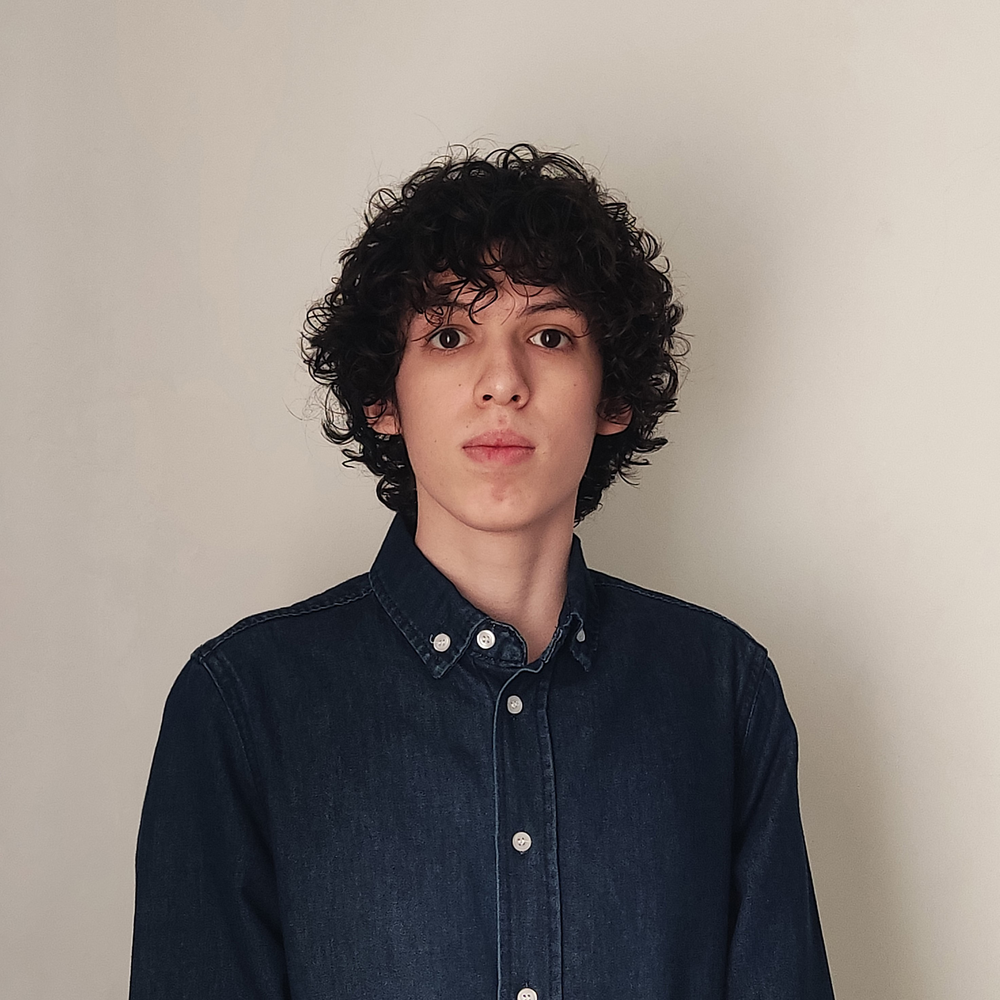

Ernesto Enrique Urrea López
About Me
I'm a sixth-semester Electronics Engineering student at Tecnológico de Monterrey, with over three years of academic experience in electronics and embedded software and hardware development.
Over the last 1.5 years, I've been contributing to the student group VANTTec in the research and development of the electronics and embedded systems for an Unmanned Surface Vehicle (USV) and a Self-Driving Vehicle (SDV).
Experience
VantTec: Self-Driving Vehicle, Electronics and Embedded Systems Developer (Mar 2023 - Present)
- Redesigned the electronic system responsible for controlling the car’s panel and other vehicle indicators. Designed an electrical protection and fault detection system to comply with requirements established by the partner company ZF.
- Collaborated on a team in the redesign of the vehicle’s electronic system to implement a different CAN topology, using GitHub version control, and the creation of the documentation for the system.
- Developed an STM32 library for I2C communication with an LTC4151 power monitor, and a ROS2 node that publishes the data received by the computer via CAN bus of the voltage readings of the battery package.
VantTec: Unmanned Surface Vehicle, Leader of Electronic and Embedded Systems (Aug 2022 - Present)
- Líder del equipo de 6 miembros encargado del desarrollo de sistemas embebidos y electrónica de un vehículo de superficie no tripulado (USV)
- Diseño del sistema de distribución de energía y de control para diferentes componentes del vehículo utilizados para resolver retos de acuerdo con requerimientos establecidos por los organizadores del concurso RoboBoat.
Electraton, Hardware and Software Developer (Sep 2023 - Present)
- Design, implementation and development of the graphical interface of a real-time visualization system for the pilot of the data obtained through telemetry during the race.
Magnetic Levitator (Fall 2023)
- Planning and early construction of a magnetic levitator in collaboration with ITESM professors and researchers.
- Modificated the original analog control circuit to implement an ATmega328P-based digital controller as well as analog sensor reading.
- Designed and implementated the sensor reading software and the discrete PID controller for the electromagnet, applying unit and integration testing to ensure the correct functioning of the system.
Workshop on Batteries and Electric Vehicles by Keysight (Oct 2023)
- Participated in a one-day workshop on battery charge and discharge profile emulation and capture, as well as measurement and emulation of communication protocols between electric vehicles and chargers as part of the International Symposium on Electromobility (ISEM) 2023.
CBTIS 230 Robotics Team, Hardware and Software Developer (Feb 2019 - Jul 2021)
- Led the 6-member team in charge of the design and initial development of a prototype guidance system for rehabilitation centers based on light signals. Desiged and developed the prototype's hardware and software for the controller, path selection algorithm and the Windows application.